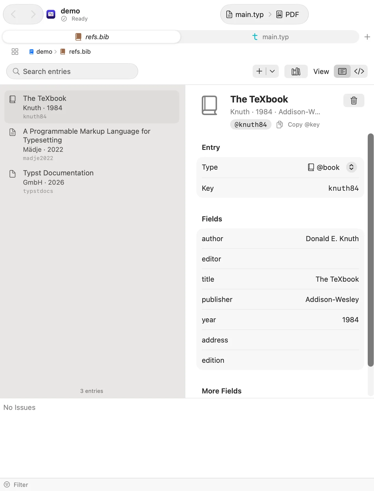
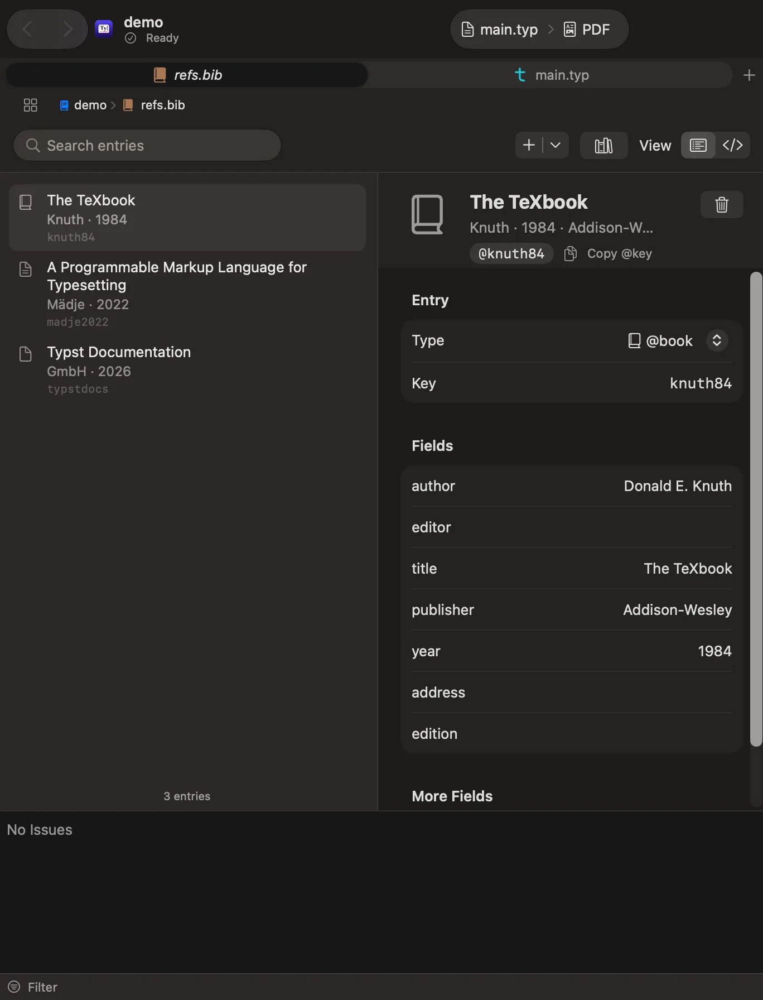

References
Typo edits .bib files in a form, looks up references and inserts citations.
The BibTeX editor
Open a .bib file from the file tree to edit it as a list of entries with a form for each. Common fields are shown, and More Fields has the rest. Typo checks that the required fields of each entry type are filled in.


Add Reference
To add an entry from an identifier, open Add Reference… (a button in the BibTeX editor and in the citation picker). Enter a DOI, an arXiv ID or an ISBN, then press Fetch. Typo looks it up and appends the entry to a .bib file of the project. If the entry exists already, you can cite it instead.
Examples of accepted input: 10.1145/3591280, arXiv:1706.03762, 978-0-201-03801-9.
Insert Citation
Choose Format › Insert Citation… (⇧⌘C). The citation picker lists the references of the project’s bibliography. Pick one to insert it at the caret. Completion also suggests the bibliography keys you can reach.
Zotero sync
Choose File › Connect Zotero…. Typo fills a .bib file of the project from your Zotero library and keeps it in sync. It can read the local Zotero app or a Zotero account.